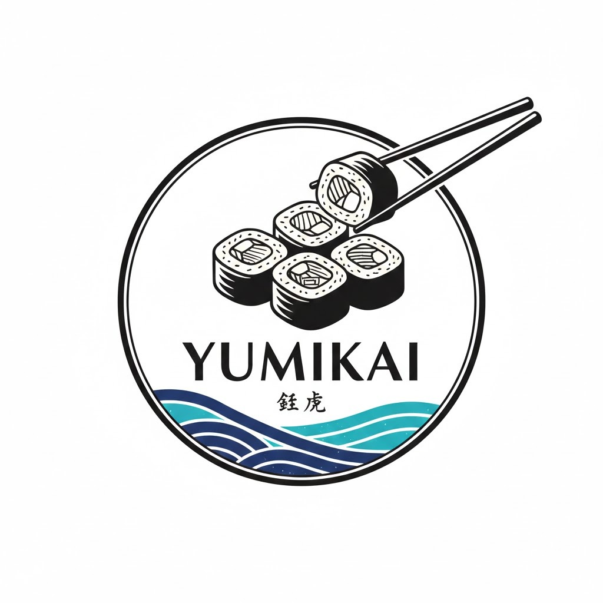
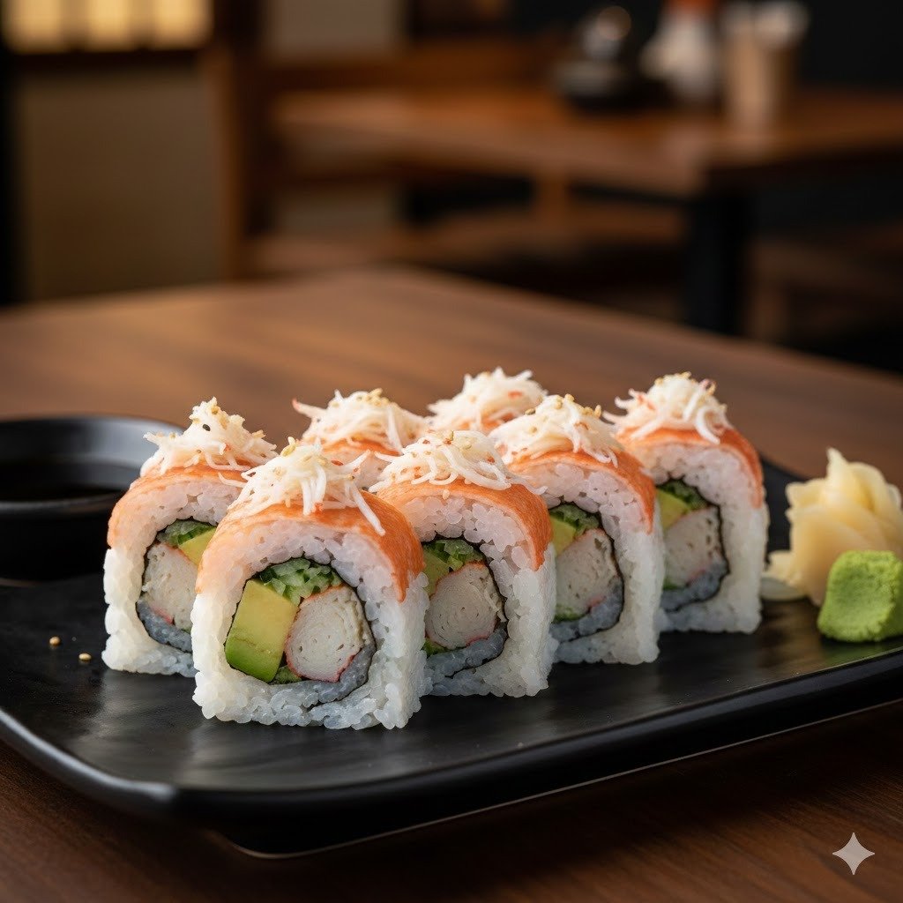
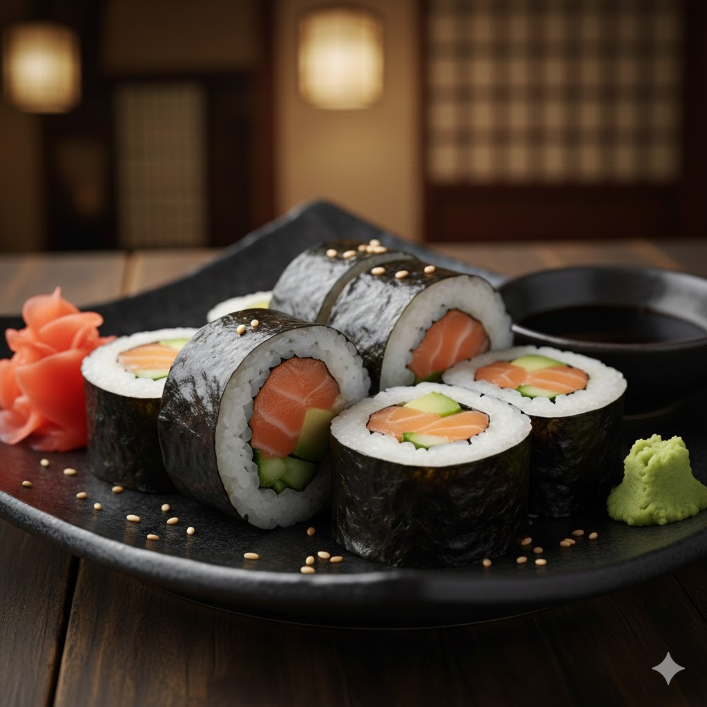
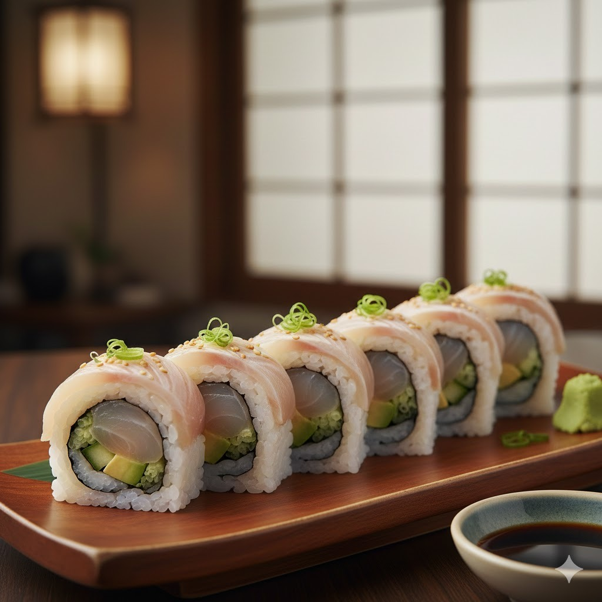
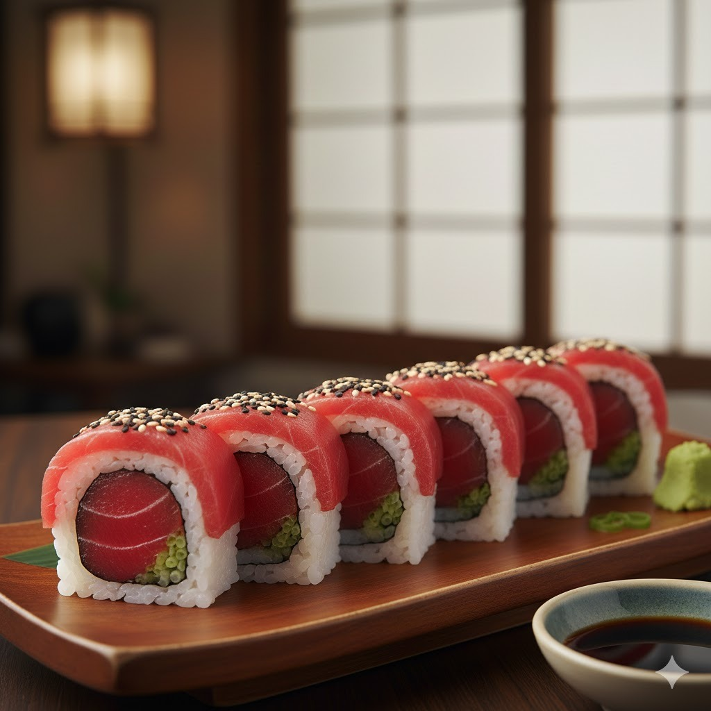
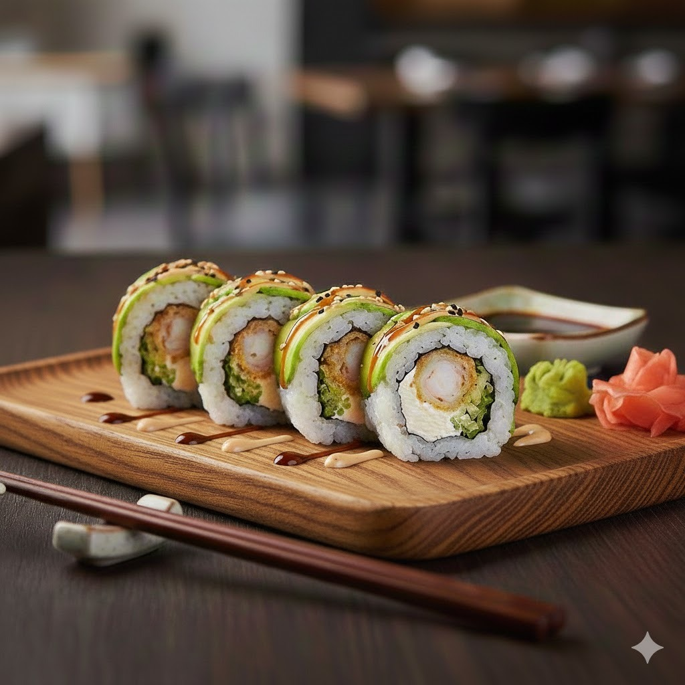
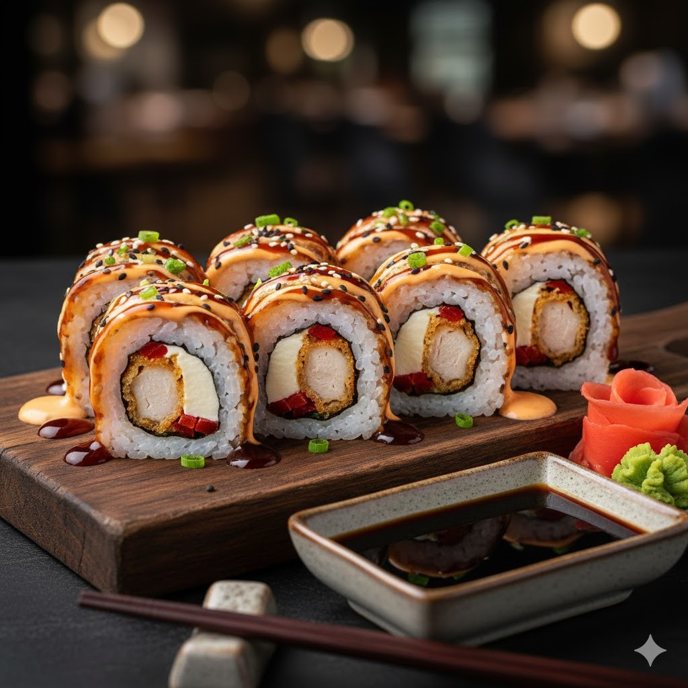

Restaurante Yumikai Sushi"El sushi es el equilibrio perfecto entre la técnica del hombre y la generosidad de la naturaleza."
Exquisito rollo uramaki relleno de surimi premium, aguacate cremoso y pepino fresco. Coronado con cangrejo desmenuzado y sésamo.

Salmón fresco grado premium y láminas de aguacate cremoso, envueltos en arroz sazonado y alga nori crujiente.

Pescado blanco premium de temporada, aguacate y pepino, cubierto con pescado sellado, cebollín y sésamo.

Atún rojo fresco grado sashimi y cebollín, cubierto con cortes premium de atún y sésamo bicolor.

Camarones crocantes en tempura, queso crema y pepino, envueltos en aguacate con salsa unagi y mayonesa spicy.

Pollo katsu empanizado, queso crema y pimientos, con salsa teriyaki artesanal e hilos de mayonesa spicy.
